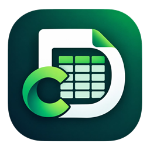

Collect, organize and export field data from your phone.
Data Clerk is an Android app for recording data in the field. Build a dataset with your own columns, enter records one at a time, and export them as a spreadsheet when you're done.
Installing
- Tap Download for Android on your phone and open the downloaded file.
- If your phone says installing from this source isn't allowed, tap Settings, turn on Allow from this source and go back.
- Tap Install. If Play Protect shows a warning, tap More details → Install anyway. It appears because Data Clerk isn't on the Play Store yet.
Already have Data Clerk? Install the new version over the old one. Your datasets are kept. From version 1.3, the app tells you when an update is ready.
What it does
Set up columns for text, numbers, dates, dropdowns and yes/no fields, or start from a template.
Large fields and a built-in number pad make one-handed entry in the field quick.
Export any dataset as CSV or Excel, or import an existing CSV.
Your datasets are saved on your phone. No account is needed to use the app.
Google Drive backup
If you choose to connect Google Drive, Data Clerk can save a copy of a dataset to your Drive as a CSV file. It only asks for access to files that Data Clerk creates, so it can't see or change anything else in your Drive. You can disconnect at any time from the app's Settings.
Privacy
Data Clerk does not sell your data, show ads or use analytics. Read the privacy policy for full details on what is stored and where.
Contact
Questions or problems: kelvinmatita6@gmail.com